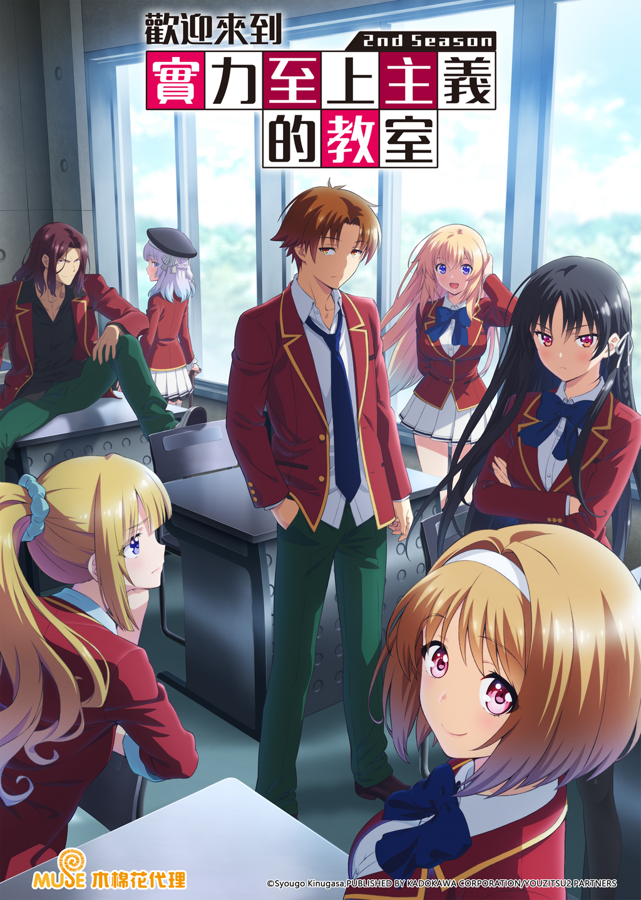

AnimeInterester
歡迎來到實力至上主義的教室 第二季

故事簡介
這個社會是否平等？何謂真正的「實力」？ 東京都的高度養成高中，那是一所徹底標榜實力至上，號稱升學率、就業率百分之百的學校。然而，入學被分到1年D班的綾小路清隆，但學校的作風與實力至上主義的招牌完全相反，只發生與十萬圓現金等值的點數給學生，在課業或生活態度上，完全採取放任主義。班上的同學在夢幻般的高中生活中，過著不斷散財、自甘墮落的日子，但是，沒多久就發現學校系統機制的真相，而被打入絕望的深淵...! D班聚集了一堆成績落後的學生，這些少男少女最後找到的答案是什麼呢？是世界的矛盾嗎？還是正當的實力社會？
製作人員
原作：衣笠彰梧
角色原案：トモセシュンサク
總導演：岸誠二 / 橋本裕之
導演：仁昌寺義人
系列構成：風埜隼人
角色設計：森田和明
音樂：横山克 / 橋口佳奈
音響監督：飯田里樹
製作：ようこそ実力至上主義の教室へ2製作委員会
聲優名單
綾小路清隆：千葉翔也
龍園翔：水中雅章
堀北鈴音：鬼頭明里
輕井澤恵：竹達彩奈
櫛田桔梗：久保百合花
平田洋介：逢坂良太
佐藤麻耶：Lynn
佐倉愛里：M・A・O
坂柳有栖：日高里菜
葛城康平：日野聰
町田浩二：中島良樹
一之瀬帆波：東山奈央
伊吹澪：小松未可子
真鍋志保：富田美憂
椎名日和：高橋李依
須藤健：竹內榮治
外村秀雄：川邊俊介
幸村輝彥：鄉田翼
堀北學：梅原裕一郎
橘茜：小原好美
茶柱佐枝：佐藤利奈
南雲雅：斉藤壮馬
高圓寺六助：岩澤俊樹
各集標題
| 話數 | 標題 |
|---|---|
| 1 | 越是身處逆境，越要保持冷靜 |
| 2 | 世上存在兩種萬惡根源。那就是急躁與怠惰 |
| 3 | 無上的靈魂能發揮至高的無良與極致的美德 |
| 4 | 人材是需要培養的 |
| 5 | 所有失敗都只是通往成功的過程 |
| 6 | 逆境便是通往真相的第一條道路 |
| 7 | 懷疑一切與相信一切同樣簡單，都是放棄思考 |
| 8 | 創傷會靜靜活在心底 |
| 9 | 過而不改，是謂過矣 |
| 10 | 人因受偽善欺瞞，才會期望毀滅 |
| 11 | 無法駕馭自己的人，永遠都會是他人的奴隸 |
| 12 | 毫無謀略的力量，總會自取滅亡 |
| 13 | 最惡劣的敵人，通常都是自己 |